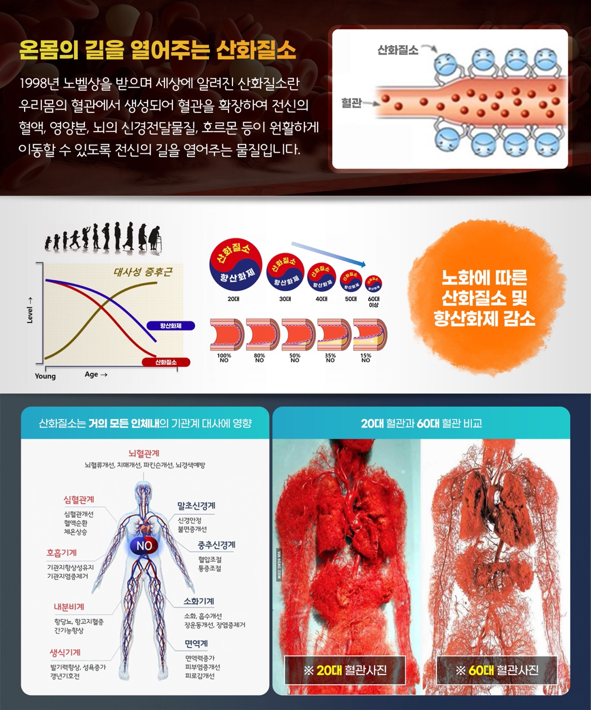
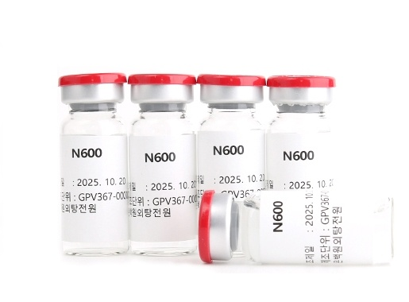
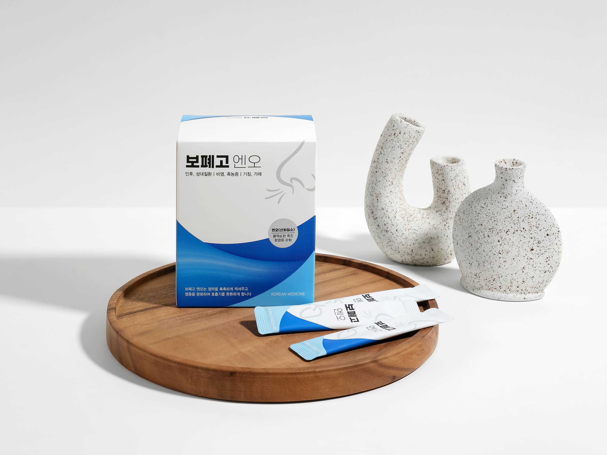
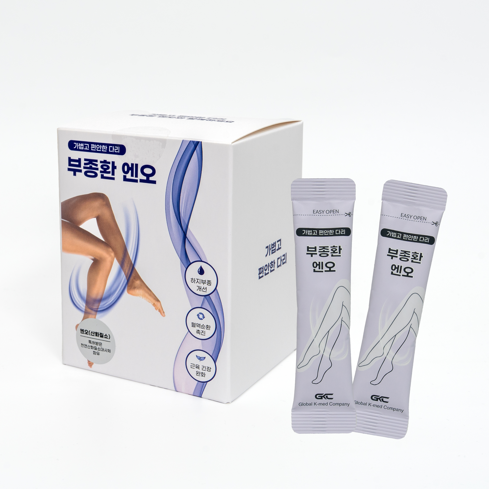

1998년 노벨 생리의학상을 통해 입증된 생명의 핵심 분자, 산화질소.
미세혈류와 림프 순환을 돕는 처방으로 염증 완화와 활력 회복을 지원합니다.
혈관 내피세포에서 분비되는 산화질소(NO)는 혈관 평활근을 이완시켜 원활한 혈액 순환을 돕는 인체 내 핵심적인 신호전달 분자입니다. 혈액과 림프의 순환을 보조하여 조직 세포에 산소와 영양분을 전달하고 노폐물을 배출하는 데 도움을 줍니다.

20대에 100%이던 산화질소 생성력은 노화 및 산화 스트레스 등으로 인해 40대, 60대에 이르며 점차 감소합니다. 부족해진 체내 물질을 외부에서 안전하게 보충하는 것이 혈관 건강 관리의 기초입니다.
미세 순환을 정상화하여 염증 물질 배출을 돕습니다. 뇌혈류 개선을 통한 인지기능 보호와 말초 신경, 관절 통증의 증상 완화에 도움을 줄 수 있습니다.
천연 발효 기술을 거친 산화질소 대사체와 한약재를 접목하여, 장기간 복용 시에도 체내에 안정적으로 흡수될 수 있도록 돕습니다.
아래 항목 중 3가지 이상에 해당하신다면 적극적인 혈류 순환 관리가 필요할 수 있습니다.

원내 특화 시술오십견 | 디스크 | 관절염 | 두통·어지럼증 | 생리통
혈류 개선을 돕는 산화질소 성분을 배합한 약침입니다. 혈액과 림프 순환을 원활하게 도와, 퇴행성 관절염 및 다양한 만성 통증 부위의 염증을 완화하는 데 도움을 줍니다.

호흡기 보약인후·성대질환 | 만성 기침·가래 | 비염·축농증
산화질소의 순환 보조 작용과 천연 점막 보호 한약재(길경, 맥문동, 오미자 등)를 결합하여 건조한 기관지 점막을 촉촉하게 유지하고 기침을 가라앉히는 데 도움을 줍니다.

하지·전신 부종하지부종 | 종아리 당김 | 하지 저림 | 산후부종
전통 처방인 당귀작약산을 기반으로 산화질소 대사체를 결합했습니다. 하체에 정체된 수분 배출을 돕고 미세혈류를 촉진하여 종아리의 무거움과 부종 완화를 지원합니다.
부종환 처방 상담하기 👉